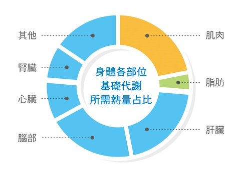
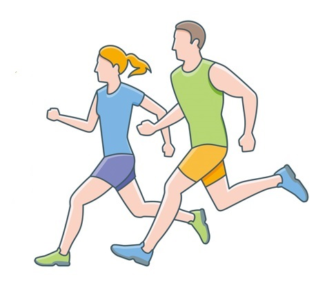
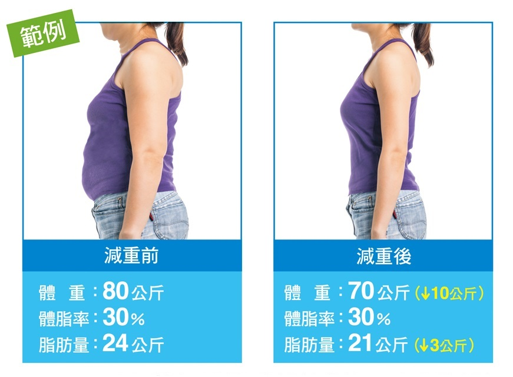

紐崔萊營養師の
減重小叮嚀
你在減重過程中遇到的問題，紐崔萊營養師們來為你解惑，幫助你擁有正確的減重知識，才能運用正確的方法成為減重勝利組！
問題1：減重時攝取的熱量較少，
但只要高於基礎代謝率
就不會減到肌肉？
每天攝取的熱量只要較低，身體就會分解肌肉和脂肪來提供熱量，不是高於基礎代謝率就不會消耗肌肉。若想要增加脂肪的消耗率，減少肌肉流失，可以透過增肌減脂運動或補充共軛亞麻油酸CLA。
基礎代謝率是指人一整天清醒躺在床上，要維持身體基本運作所需的熱量，當中包含維持心跳和各器官基本維生的熱量（下圖），其中又以維持肌肉、大腦、和肝臟所需要的熱量最多，基礎代謝率約占身體每日熱量需求的6~7成。
問題2：我每天走1萬步？
為什麼體脂率減少很有限？
每天走1萬步需要有一定的強度，建議約5,000步以快速健走且有點喘的方式進行。但是減重除了減少脂肪量，也可能消耗掉肌肉量，因此要積極增加肌肉量，體脂率才會明顯下降。
例如每天除了進行1萬步健走或30分鐘慢跑的有氧運動，每周建議至少2天增加肌力訓練，才能更有效改變體組成。
問題3：為何我減了10公斤，
體脂率卻沒有下降？
難道脂肪沒有減少？
當體重下降時，減的不只是脂肪，即使脂肪的重量有減少，也可能因為身材整個小了一號，所以身體組成的脂肪占比沒有改變。
體重減少10公斤，體脂率不變的狀況，脂肪量也相對減少了3公斤。若希望減重時也能改變身體組成，就要搭配適當的運動來增加肌肉量，加速脂肪消耗。
建議運動前攝取共軛亞麻油酸CLA，可有助增加運動效能、幫助增肌減脂；或在平日飲食多攝取綠茶磷脂複合物，有助減少脂肪吸收、加速脂肪分解，減少體脂形成。
